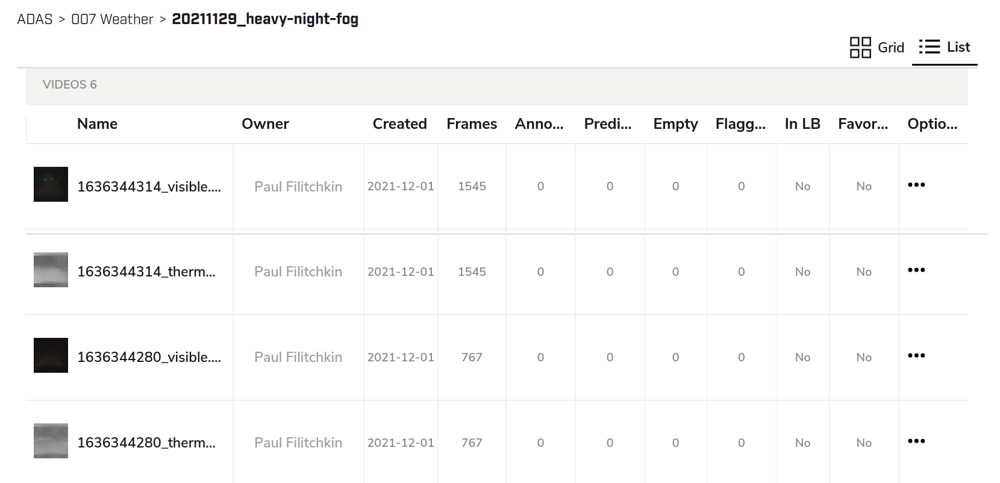
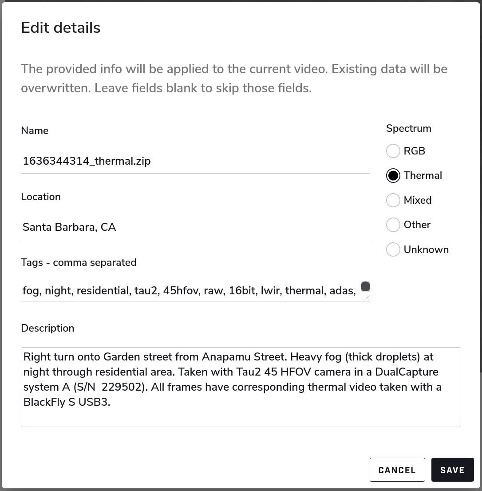
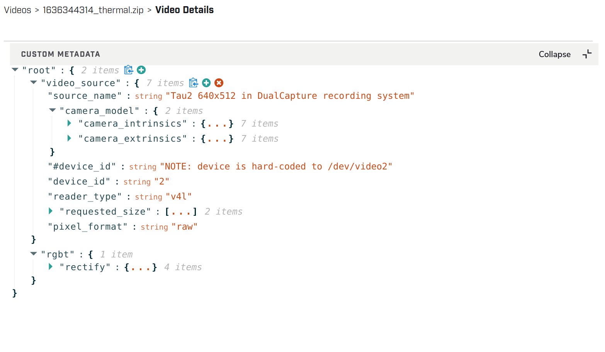

Conservator Upload Guide¶
Conservator has several options to upload video data. The supported formats include:
Zip (or other archive format) of raw thermal tiffs
Zip (or other archive format) of jpgs/pngs
Multi-page .tiff
Video: .mp4, .wmv, .mov, .gif, .ts, .seq, .csq
Image: .jpg, .png, .bmp, .tiff
Annotation data: .json, .xgtf
Scripted Uploads¶
The script examples/upload_videos/conservator_upload.py is provided to enable configurable, bulk upload of videos to your Conservator instance.
The features of this script include:
Uploading data in batches using consistent naming conventions
Configuring description, tags, and video source via a spreadsheet (csv)
Uploading intrinsic, extrinsic, and multi-camera calibration parameters in a standardized way
Ability to update existing metadata (i.e. run the scripts as many times as needed without extra overhead)
Dry-run mode to preview upload/update operations before executing them
Pre-requisites¶
Please ensure that you have Conservator-CLI installed and configured per the Installation guide.
Please ensure that you have Python 3.x installed.
The upload script requires the
prettytablemodule; please runpip install prettytableto install it.
Upload Configs¶
Each batch of uploads is stored in a separate folder and configured by: - upload.csv - list of videos to upload - upload.json - metadata to associate with uploads (tags, description, intrinsics, extrinsics)
By default, the conservator_upload script will look for a directory named config in the same directory as it; i.e.:
├── conservator_upload.py
│
└── config/upload
│
├── generic-video-example
│ ├── upload.csv
│ └── upload.json
│
├── prism-example
│ ├── upload.csv
│ └── upload.json
│
└── {upload batch name}
├── upload.csv
└── upload.json
If you want to skip uploading a video listed in an upload.csv file, simply comment it out by adding a # at the start of the line.
The following table describes the fields used in the upload.csv file:
Column Name |
Description |
|---|---|
type |
Type of upload ( |
hardware_name |
A key that specifies the capture hardware/sensor used for this upload (resolved in |
conservator_location |
Specifies which Conservator Project and Collection to upload to. Use your own conventions to organize projects. Format: PROJECT_NAME / FOLDER / SUBFOLDER / .. |
local_path |
The location on disk of the asset to upload (supports expansion of any user-defined environment variable) |
tags |
Comma separated list of tags to associate with this specific upload |
description |
Full-text description of the capture |
Generic Video Example¶
This example can be run using data included in this repository on any customer instance of Conservator.
type,hardware_name,conservator_location,local_path,tags,description
video,beamsplitter.thermal,/ADAS/Upload Test/20220112_generic-video-example,$CORTEX_ROOT/sample_data/offramp/thermal-video-B7JTS4i4hpoRgPsi2.mp4,"offramp, night","offramp at night with semi truck"
video,beamsplitter.visible,/ADAS/Upload Test/20220112_generic-video-example,$CORTEX_ROOT/sample_data/offramp/visible-video-aJANTbw3WAW3oGkQB.mp4,"offramp, night","offramp at night with semi truck"
Note that beamsplitter.thermal is referring to the metadata defined in ["default_metadata"]["beamsplitter"]["thermal"] within upload.json, and that the conservator_location and local_path fields may need to be edited to reflect your user environment, and Conservator project setup respectively.
Here is an example from examples/upload_videos/config/upload/generic-video-example/upload.json
{
"default_metadata": {
"beamsplitter": {
"thermal": {
"tags": [
"ADK",
"boson",
// ..
],
"spectrum": "thermal",
"location": "Santa Barbara, California",
"description": "Captured with Boson sensor core (ADK)"
},
"visible": {
// ..
}
}
},
"#description": "The description here is only for reference and does not get uploaded",
"description": "Beamsplitter upload batch for generic video example",
}
List All Configuration Entries¶
To list all available upload projects, run the script without any parameters (or with only a --config_root parameter):
$ python examples/upload_videos/conservator_upload.py
No config path provided, using default (/home/user/conservator-cli/examples/upload_videos/config/upload)
+-----------------------+--------------------------------------------------------+
| Config | Description |
+-----------------------+--------------------------------------------------------+
| generic-video-example | Beamsplitter upload batch for generic video example |
| prism-example | Prism-formatted upload batch for generic video example |
+-----------------------+--------------------------------------------------------+
Execute in Dry-Run Mode¶
This is useful to establish sanity checks before kicking off a large upload job.
$ python3 examples/upload_videos/conservator_upload.py generic-video-example
Video exists and is ready for upload: /home/user/sample_data/offramp/thermal-video-B7JTS4i4hpoRgPsi2.mp4
Video exists and is ready for upload: /home/user/sample_data/offramp/visible-video-aJANTbw3WAW3oGkQB.mp4
+-------------------------------------------------+-------+
| Name | Count |
+-------------------------------------------------+-------+
| Total entries | 2 |
| Total entries commented out by user | 0 |
| Total entries that are invalid | 0 |
| Videos would be uploaded | 2 |
| Videos ACTUALLY uploaded | 0 |
| Videos currently being processed by Conservator | 0 |
| Video metadata updated | 0 |
+-------------------------------------------------+-------+
---------------------------------------------------------------------------
NOTE: No data was uploaded. Set --dry_run=false to upload
---------------------------------------------------------------------------
Execute Actual Upload¶
$ python examples/upload_videos/conservator_upload.py generic-video-example --dry_run=false
20:53:56 | Uploading "thermal-video-B7JTS4i4hpoRgPsi2.mp4"
20:53:56 | File on disk: /home/user/sample_data/offramp/thermal-video-B7JTS4i4hpoRgPsi2.mp4
20:53:56 | Conservator location: /ADAS/Upload Test/20220112_generic-video-example
20:54:02 | Success! See: https://flirconservator.com/videos/6PGfdWgAoHa2tnx2o
20:54:02 |
20:54:03 | Uploading "visible-video-aJANTbw3WAW3oGkQB.mp4"
20:54:03 | File on disk: /home/user/prism-ai-tools/sample_data/offramp/visible-video-aJANTbw3WAW3oGkQB.mp4
20:54:03 | Conservator location: /ADAS/Upload Test/20220112_generic-video-example
20:54:07 | Success! See: https://flirconservator.com/videos/bGGbuopzoKjvoYixv
20:54:07 |
+-------------------------------------------------+-------+
| Name | Count |
+-------------------------------------------------+-------+
| Total entries | 2 |
| Total entries commented out by user | 0 |
| Total entries that are invalid | 0 |
| Videos would be uploaded | 2 |
| Videos ACTUALLY uploaded | 2 |
| Videos currently being processed by Conservator | 0 |
| Video metadata updated | 0 |
+-------------------------------------------------+-------+
Prism Example¶
Here is an example of upload.csv with 3 Prism uploads (3 thermal videos + 3 frame synced visible videos).
The full contents are in examples/upload_videos/config/upload/prism-example/upload.csv.
The example will fail if you do not have the original data, but it provides a batch upload blueprint
type,hardware_name,conservator_location,local_path,tags,description
prism,dc,/ADAS/Upload Test/20220112_prism-example/,$CORTEX_ROOT/sample_data/night_fog,"fog, night, parking lot, person","Person walking in parking lot at 60m"
Here is an example from examples/upload_videos/config/upload/prism-example/upload.json:
{
"default_metadata": {
"dc": {
"thermal": {
"tags": [
"45hfov",
"raw",
"16bit",
"lwir"
],
"spectrum": "thermal",
//..
},
"rgb": {
// ..
}
}
},
"#description": "This description is for the upload batch",
"description": "Prism-formatted upload batch for generic video example"
}
Execute in Dry-Run Mode¶
$ python examples/upload_videos/conservator_upload.py 20211129_heavy-night-fog
2021-12-06 16:47:49,192 - upload - INFO - Zipping 1636345107_thermal.zip (conservator_upload.py:314)
2021-12-06 16:48:04,901 - upload - INFO - Zipping 1636345107_visible.zip (no compression) (conservator_upload.py:336)
+-------------------------------------------------+-------+
| Name | Count |
+-------------------------------------------------+-------+
| Total entries | 3 |
| Total entries commented out by user | 2 |
| Total entries that are invalid | 0 |
| Videos would be uploaded | 2 |
| Videos ACTUALLY uploaded | 0 |
| Videos currently being processed by Conservator | 0 |
| Video metadata would upload | 0 |
| Video metadata ACTUALLY uploaded | 0 |
+-------------------------------------------------+-------+
---------------------------------------------------------------------------
NOTE: No data was uploaded. Set --dry_run=false to upload
---------------------------------------------------------------------------
Execute¶
$ python examples/upload_videos/conservator_upload.py 20211129_heavy-night-fog --dry_run=false
2021-12-06 16:00:57,925 - upload - INFO - Uploading 1636345107_thermal.zip to project: "/ADAS/007 Weather/20211129_heavy-night-fog" (conservator_upload.py:196)
2021-12-06 16:05:42,730 - upload - INFO - Uploaded video with id: "fPEhjR7yhebcvrJBS" (conservator_upload.py:233)
2021-12-06 16:06:00,369 - upload - INFO - Uploading 1636345107_visible.zip to project: "/ADAS/007 Weather/20211129_heavy-night-fog" (conservator_upload.py:196)
+-------------------------------------------------+-------+
| Name | Count |
+-------------------------------------------------+-------+
| Total entries | 3 |
| Total entries commented out by user | 2 |
| Total entries that are invalid | 0 |
| Videos would be uploaded | 2 |
| Videos ACTUALLY uploaded | 2 |
| Videos currently being processed by Conservator | 0 |
| Video metadata would upload | 0 |
| Video metadata ACTUALLY uploaded | 0 |
+-------------------------------------------------+-------+
Expected Data in Conservator¶
For this example the videos can be found in the ADAS project under the 007 Weather / 20211129_heavy-night-fog collection.
{kind=link}
The basic information can be found from the “Edit Details” dialog
{kind=link}
All camera and related parameters can be found in the Video Details in Custom Metadata
{kind=link}